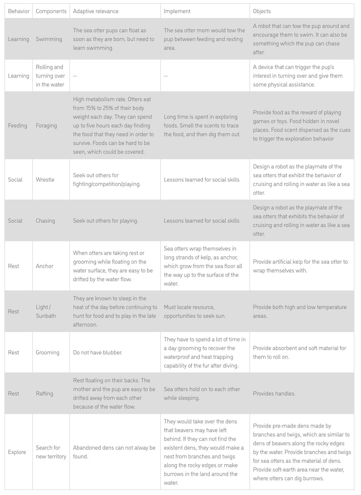
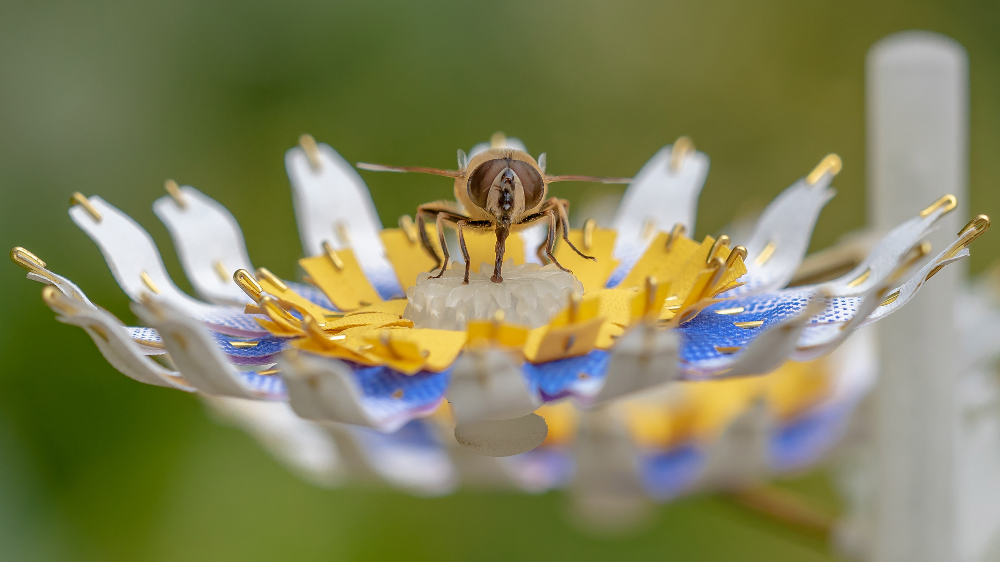

k // a
KAREN EL ASMAR
Week 10
Assignment Brief - Final Proposal:
Post three research-backed (ethograms, research papers, outcome based workflow, behavior mapping etc.) preliminary ideas. Ideas could be for the same animal, each targeting different behaviors (social, play, feeding, handling stress indicators, etc.) or different animals as well. Mention goal of idea (rehabilitation, release in the wild, handle stress in managed care, tackle endangered species, encourage cooperative behaviors etc.), the primary behavior observed/targeted for and the outcome of the system/device/approach.
Team of 2
3 Proposals for Animals in Different Environmental Contexts
For the final project, I will be teaming up with Jerry Tan. While coming up with our ideas, we decided to look back to our work throughout the semester and combine our interests. For this, we put forward 3 proposals, two from our enrichment assignments: sea otters and insects and one from our midterms: urban wildlife.
Focal point 1: Sea Otter Orphans in Surrogate Programs
For his Enrichment project, Jerry chose to study and design for sea otter orphans in surrogate programs such as the rescuing program of the Monterey Bay Aquarium [1], Saving Sea Otter 696. What I find interesting is that a lot of sea otters are left stranded in the sea and the need for such a program and enrichment is an important issue that is possibly undervalued.
Considering that the ultimate goal of the surrogate programs is to release the raised animals back into the wild, we think that these programs should address all skills necessary and crucial for these animals to thrive and survive alone afterwards in nature.
A specific skill would be swimming. The sea otter pups can float as soon as they are born, but need to learn this skill. In the natural setting, the sea otter pups are taught to swim by their moms, and then polish the swimming skills through playing with their mates. However, based on the observation through the documentary of the programs, we find that the sea otter orphans in the programs are quite alone. They will be taught to swim by the keepers, as shown in the video below. After they are able to swim, they will get and live with their own “step mother”, a female adult sea otter.
Video courtesy: Monterey Bay Aquarium In the previous work, Jerry put forward a design which can promote and enrich the pup's swimming learning process. Now, we would still like to focus on the learning process, however, in the context of surrogate programs. Our guiding questions are as follows: Ethogram of the sea otter in wild [2]: Outcome Based Workflow: Focal Point 2: Urbanwild Animals
BAT CLOUD [3] is a project that aims to bring awareness and greater public visibility to bats as a critical part of our ecosystem. The intention of the Bio-City [4] is that this Bio-inclusive eco-performance-artwork will transgress, distort and alter anthropocentric world-views by delivering a message of eco-awareness, biodiversity and cross-species collaboration.
Design for city noctural animals The global study [5] revealed a strong effect of humans on daily patterns of wildlife activity. Animals increased their nocturnality by an average factor of 1.36 in response to human disturbance. Focal Point 3: Insects
1. What are inherent behaviors and learnt behaviors of the sea otter?
2. How can we teach the sea otter pups necessary behaviors efficiently so that they can thrive after returning to nature?
3. How can the sea otters raised in the surrogate programs acquire the imparting skill so that they can pass on their learnt skills and knowledges to their descendants in nature? Can a teaching skill of a sea otter be learnt and trained through games?

Inspiration:
For my enrichment project, I chose to design for insects, specifically crickets. I was inspired from the cricket fights and their social behaviors to attract mates and decided to design a "wingbot" for crickets to higher their chances of mating. However, for the final project, we decided to continue working on a different insect and chose to work on either butterflies or bees. Problems we're interested in addressing are particularly the loss of biodiversity and habitat for these insects and their relationship with humans.
Precedents we found very interesting are the:
Artificial Flowers - Matile Boelhouwer [6]
The artist in this project designs a series of artificial flowers that turn rain into sugar water to serve as emergency food sources for city-dwelling insect pollinators. The afrtist observed the relationship of insects with flowers and watched how urbanization and climate change are affecting the abundance of food for these insects and hence, proposed this artificial system that would attract the insects. What is particularly interesting in this example is the amount of detail in the design: The type, shape, color and central containers of each flower are customized to the common preferences, eyesight and tongue length of different specied of insects.

Synthetic Polleniser - Michael Candy [7]
In this project, the artist prposed a method of ariticial pollination using 3D-printed robotic flowers, in a bid to help increase the dwindling bee population. The flowers are all equipped with pollen and nectar. They are designed to be installed alongside real plants, to encourage bees to pollinate. What we found particularly interesting in this project is the idea of mixing an augmented "nature" with a real nature and helping these insects feel this naturally.
Reference
[1] Aquarium, Monterey Bay. “Saving Sea Otter 696: Learning to Swim.” YouTube, YouTube, 24 Sept. 2015, www.youtube.com/watch?v=IXFqLIBHm-E. Look, Deep. “The Fantastic Fur of Sea Otters | Deep Look.” YouTube, YouTube, 6 Jan. 2015, www.youtube.com/watch?v=Zxqg_um1TXI. “Sea Otter.” Otter Facts and Information, www.otter-world.com/sea-otter/.
[2] Packard, J. M., and C. A. Ribic. "Classification of the behavior of sea otters (Enhydra lutris)." Canadian Journal of Zoology 60.6 (1982): 1362-1373.
<
[3] “Bat Cloud.” The Expanded Environment, www.expandedenvironment.org/bat-cloud-2/.
[4] “Bio-City: Eco-Performance Art Installation.” The Expanded Environment, www.expandedenvironment.org/bio-city/.
[5] Gaynor, Kaitlyn M., et al. "The influence of human disturbance on wildlife nocturnality." Science 360.6394 (2018): 1232-1235.
[6] Hitti, Natashah. “Matilde Boelhouwer Designs Artificial Flowers to Feed Urban Insects.” Dezeen, Dezeen, 12 Nov. 2018, www.dezeen.com/2018/11/12/matilde-boelhouwer-artificial-flowers-feed-urban-insects/.
[7] Erman, Maria. “Michael Candy's Synthetic Pollenizer Artificially Pollinates Bees.” Designboom, 15 Jan. 2018, www.designboom.com/art/michael-candy-synthetic-pollenizer-01-16-2018/.